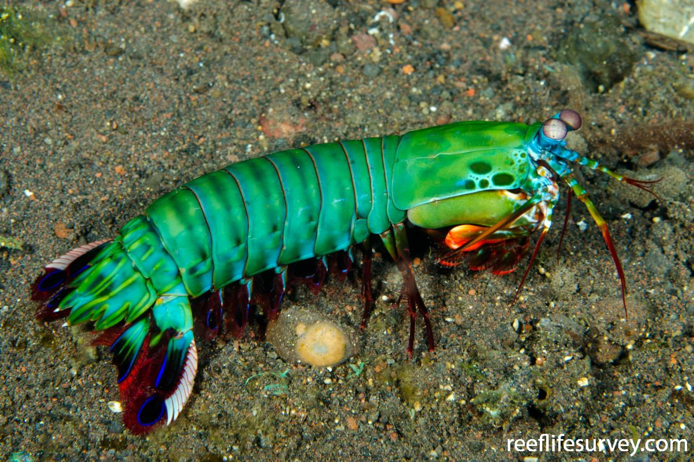

Informações gerais

Odontodactylus scyllarus
Os estomatópodes são predadores ativos que caçam presas com o auxílio de um sentido de visão muito apurado e capaz de interpretar polarização no espectro ultravioleta e infravermelho). Apresentam uma grande variação de tamanho, que pode ir de poucos milímetros até aproximadamente 40 cm nas espécies maiores.
- Reino: Animalia
- Filo: Arthropoda
- Subfilo: Crustacea
- Classe:Malacostraca
- Subclasse:
- Ordem:Stomatopoda
Visão

Esses animais possuem o mais complexo sistema de visão de cores do mundo animal, pois enxergam 12 cores primárias, correspondentes aos 12 pigmentos distintos presentes em sua retina.
Soco potente!
O camarão mantis ou camarão-louva-deus-palhaço (sério!) é um dos animais com um dos mais fortes socos de todo o planeta. Esse artrópode que possui pouco menos de 12 centímetros é capaz de quebrar conchas e até vidros de aquário com seus membros, seus socos podem atingir a marca de 80Km/h sendo um dos animais proporcionalmente mais fortes de todo o mundo.